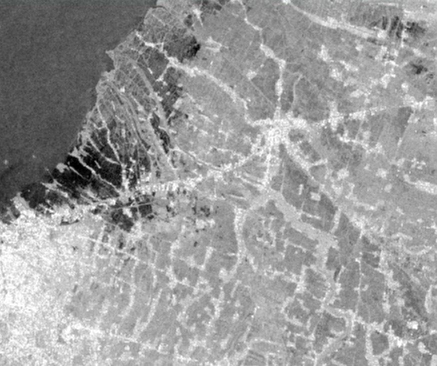
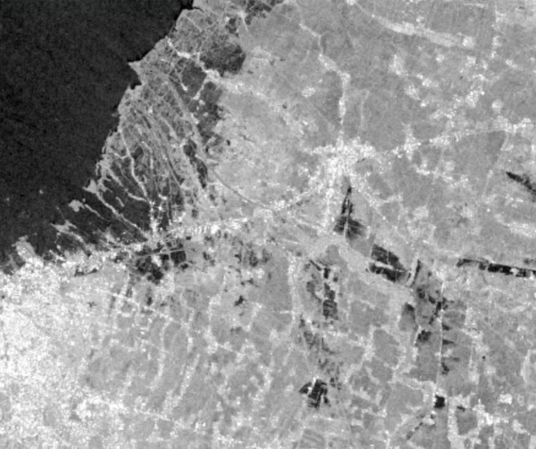
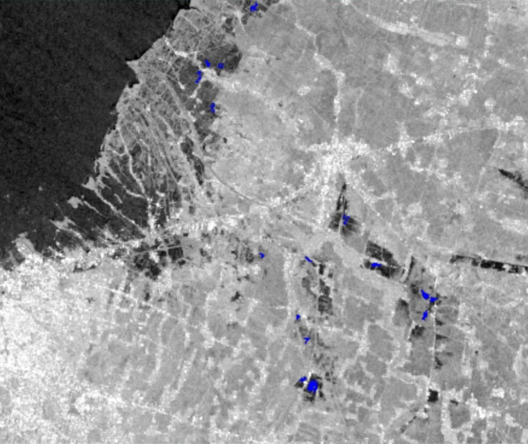

Pemetaan Perkiraan Genangan Banjir dengan Citra Sentinel-1 SAR di Google Earth Engine
Latar belakang
Saat banjir, langit biasanya tertutup awan tebal sehingga citra optik seperti Landsat atau Sentinel-2 sulit dipakai. Citra radar (SAR) tidak punya masalah itu, karena sensornya aktif dan dapat menembus awan serta merekam siang maupun malam. Permukaan air yang tenang memantulkan gelombang radar menjauh dari sensor, sehingga tampak gelap pada citra.
Proyek latihan ini mencoba memetakan perkiraan genangan banjir di sekitar Demak dan Semarang, Jawa Tengah, yang terdampak banjir pada Februari 2024, dengan membandingkan citra Sentinel-1 sebelum dan sesudah kejadian di Google Earth Engine.
Data yang digunakan
| Data | Format Data | Jenis Data | Sumber |
|---|---|---|---|
| Sentinel-1 GRD (mode IW, polarisasi VV, lintasan descending) | Raster | Sekunder | Google Earth Engine |
| JRC Global Surface Water (seasonality) | Raster | Sekunder | Google Earth Engine |
| SRTM 30 m (untuk kelerengan) | Raster | Sekunder | Google Earth Engine |
Area kajian berupa persegi panjang seluas sekitar 916 km² (110,45°–110,75° BT dan 7,05°–6,80° LS). Citra sebelum banjir diambil pada 20 Januari–2 Februari 2024, dan citra sesudah banjir pada 8–14 Februari 2024. Masing-masing dirangkum dengan nilai median.
Metode
Citra Sentinel-1 yang sudah berupa nilai backscatter dalam desibel (dB) dikurangi derau bintik (speckle) dengan filter median 30 m, lalu dibandingkan antara sebelum dan sesudah banjir. Piksel dianggap tergenang jika memenuhi kedua syarat pada tabel berikut, kemudian dibersihkan dari air permanen, lereng curam, dan piksel terpencil.
| Tahap | Ketentuan |
|---|---|
| Reduksi speckle | Filter median, radius 30 m |
| Deteksi air | Backscatter VV sesudah banjir < −15 dB |
| Deteksi perubahan | Selisih (sesudah − sebelum) < −3 dB |
| Penghapusan air permanen | JRC seasonality < 10 bulan per tahun |
| Penghapusan lereng curam | Lereng ≥ 5° dikeluarkan (SRTM) |
| Penghapusan noise | Kelompok kurang dari 8 piksel dihapus |
Luas genangan dihitung dengan menjumlahkan luas piksel yang lolos semua tahap pada resolusi 10 m.
Hasil
Perkiraan luas genangan di area kajian adalah sekitar 414,8 hektare, atau sekitar 0,45% dari luas area kajian. Genangan muncul sebagai bercak-bercak kecil yang tersebar, terutama di bagian tengah hingga selatan area kajian, sedangkan bagian barat laut yang sangat gelap adalah laut dan tidak dihitung sebagai genangan karena dikeluarkan sebagai air permanen.



Skrip lengkap dapat dijalankan di Google Earth Engine Code Editor.
Kesimpulan
Perbandingan citra Sentinel-1 sebelum dan sesudah kejadian dapat memetakan perkiraan genangan dengan cepat, tanpa terhambat awan. Pada latihan ini, genangan terdeteksi seluas sekitar 414,8 hektare. Hasilnya masih berupa perkiraan karena ambang batas ditentukan secara empiris, hanya satu arah lintasan yang dipakai, dan belum ada validasi dengan data lapangan atau citra optik. Sebelum dijadikan acuan, hasil ini perlu dibandingkan dengan data kejadian, misalnya dari BNPB.
← View other projects